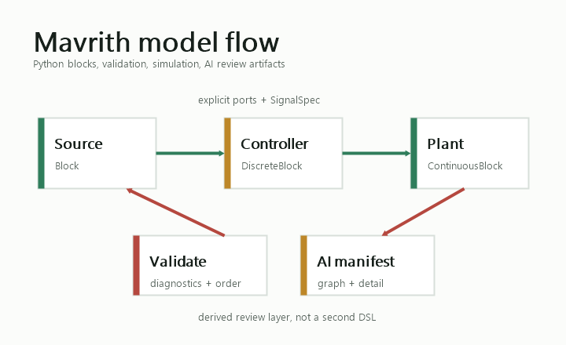

Learn the mental model
Read how blocks, ports, direct feedthrough, timing, and validation fit together.
Open core conceptsQuickstart
Mavrith keeps dynamic-system models in ordinary Python. You define the domain blocks, connect explicit ports, and let the simulator check structure, signal contracts, timing, and execution order.

Install the runtime package from PyPI.
pip install mavrithInstall YAML support only when you want graph/detail manifest files.
pip install "mavrith[yaml]"
A block declares its ports, says whether current outputs depend on
current inputs, and implements output(). This constant
source has no inputs and one scalar float output.
from mavrith import Block, PortSpec, SignalSpec, SimulationConfig, Simulator, System
FLOAT = SignalSpec(dtype="float", shape=())
class Constant(Block):
outputs = (PortSpec.output("out", spec=FLOAT),)
def __init__(self, value: float) -> None:
super().__init__(direct_feedthrough=False)
self.value = value
def output(self, ctx, inputs):
return self.value
Create a System, add blocks by unique names, validate
before simulation, and inspect the result object.
system = System("hello")
system.add_block("src", Constant(1.0))
config = SimulationConfig(start=0.0, stop=0.2, dt=0.1)
simulator = Simulator()
report = simulator.validate(system, config)
if report.is_valid:
result = simulator.run(system, config)
print(result.final_outputs["src"]["out"])
else:
for diagnostic in report.diagnostics:
print(diagnostic.code, diagnostic.message)1.0. For feedback,
connect the path through a DiscreteBlock or
ContinuousBlock so the compiler does not reject an
algebraic loop.
Read how blocks, ports, direct feedthrough, timing, and validation fit together.
Open core conceptsStart from closed loop, cruise control, water cooling, vehicle path tracking, or multirate timing.
Open examplesKeep Python as the source of truth and export graph/detail manifests for review.
Open AI workflow